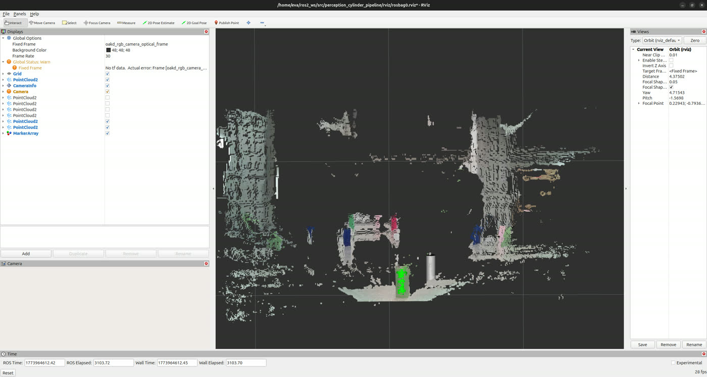
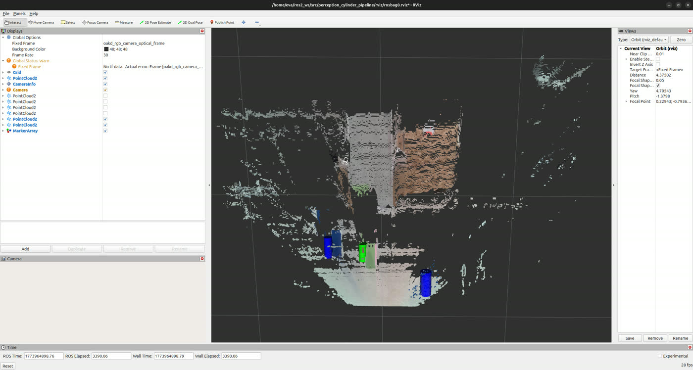
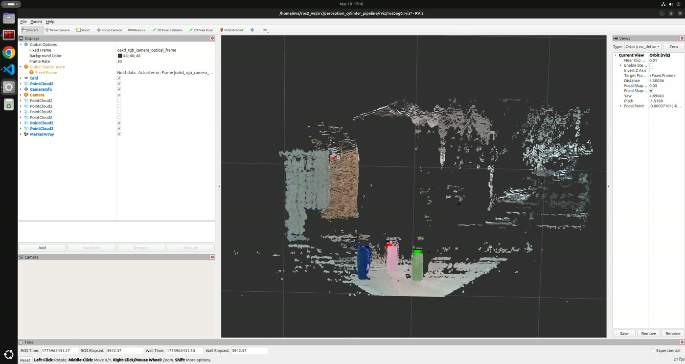

Ten Stages From a Million Raw Points to "That's a Green Cylinder"
A ROS 2 perception package that turns OAK-D RGB-D point clouds into labeled object
detections. It subscribes to /oakd/points, crops and downsamples the cloud,
estimates per-point surface normals, RANSACs away the floor, clusters what's left, fits
cylinder models from point-normal geometry, classifies each one by HSV
hue, and publishes RViz markers — with every intermediate stage exposed as its own debug
cloud so a failure can be seen rather than guessed at.
CYLINDER markers published to /viz/detections, one per fitted object.One callback, ten stages, no hand-waving in the middle.
The whole pipeline is a linear synchronous chain inside a single
pointcloud_callback() — one cloud processed to completion before the next is
touched. No threading, no frame buffering. That's a deliberate constraint: it makes the
per-frame behavior reproducible, and it means every stage can publish what it produced.
- Parse PointCloud2 — unpack xyz with aligned RGB from packed float32 —
- Validity check — drop NaN / infinite points /stage_valid
- Box filter — keep only the region of interest /stage_box
- Voxel downsample — uniform grid averaging /stage_downsample
- Normal estimation — k-NN neighborhood + SVD per point —
- Plane RANSAC — find and remove the dominant floor plane /stage_no_plane
- Euclidean clustering — cKDTree radius grouping /stage_clusters
- Cylinder RANSAC — fit a cylinder per cluster /stage_cylinders
- Semantic labeling — RGB → HSV hue band → red / green / blue / unknown —
- Publish markers — colored CYLINDER markers /viz/detections
Six of those stages publish a PointCloud2 of their own output. When a
detection is wrong, you don't reason about it — you open RViz, walk the stages, and watch
where the points stopped making sense.
A cylinder axis is just the cross product of two normals.
The interesting stage is cylinder fitting, because it doesn't sample points — it samples normals. Per-point surface normals come first: for each point, take its k nearest neighbors, build the local covariance, and run SVD — the smallest singular vector is the surface normal. With normals in hand, cylinder RANSAC follows from a geometric fact: on an ideal cylinder, every surface normal is perpendicular to the axis. So sampling two normals and taking their cross product gives a candidate axis directly, no least-squares needed.
â = n̂₁ × n̂₂ // candidate cylinder axis from two sampled normals
inlier ⇔ d⊥(p,â) ∈ [ r − thresh , r + thresh ] // perpendicular distance inside the radius band
Each candidate axis is scored by counting points whose perpendicular distance falls inside
the radius band, the best model wins, and a fit is only accepted above
min_cylinder_inliers. Fitting runs per cluster independently,
which is what lets one frame produce several detections instead of one compromise model.
Color comes last and deliberately in HSV, not RGB: the inlier points'
average color is converted and classified by hue angle alone, so a cylinder that's
brightly lit and one in shadow land in the same band. Red wraps
(0–30° and 330–360°), green takes
60–180°, blue 180–270°, and anything else is honestly
reported as unknown rather than forced into a guess.
| Stage | Method | Key parameters |
|---|---|---|
| Box filter | axis-aligned ROI crop | box_{x,y,z}_{min,max} |
| Downsample | voxel grid averaging | voxel_size |
| Normals | k-NN + SVD | normal_search_k |
| Plane | RANSAC, prefers upward normals | plane_ransac_thresh / _iters |
| Clustering | cKDTree radius search | cluster_dist_thresh, min/max_cluster_size |
| Cylinder | RANSAC on normal cross products | cyl_radius, cyl_radius_thresh, min_cylinder_inliers |
| Labeling | HSV hue bands | hue band boundaries |
All 26 parameters live in one PipelineConfig dataclass — tuning never means editing algorithm code.
Three bags, three scenes, same parameters.
The pipeline was validated against three recorded RGB-D bags. Markers are republished
every callback using a two-message strategy — a DELETEALL
marker first, then the new detections — which is the fix for RViz's duplicate-marker
warnings when detection counts change between frames.



When a marginal cylinder drops out, the fix is ordered rather than random: raise
cluster_dist_thresh first so the object stops fragmenting into two clusters,
then loosen cyl_radius_thresh, and only then lower
min_cylinder_inliers to accept a thinner but valid fit. Doing it in that
order changes one failure mode at a time.
What this project proves.
Publish your intermediate state. Six debug clouds cost almost nothing and convert perception debugging from inference into observation — the difference between "the detection failed" and "the plane RANSAC ate the object because it was nearly coplanar with the floor." Pick the representation that makes the math easy: fitting cylinders to raw points is an optimization problem, but fitting them to normals makes the axis a cross product. And classify in the space where the thing you care about is one number — hue survives lighting changes that RGB thresholds don't.